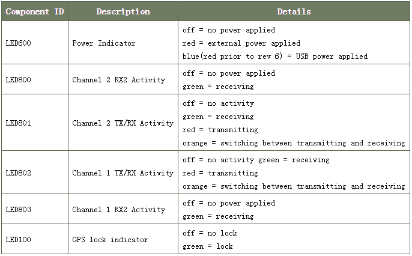
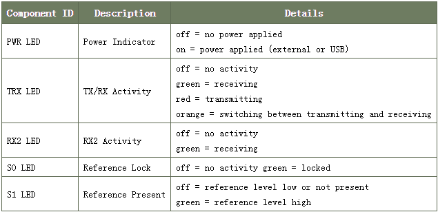
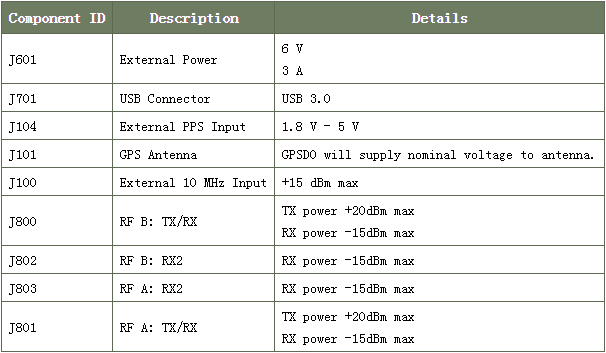

B200使用手册
产品特征：
硬件能力
• 集成RF前端（70MHz~6GHZ）
• 外部PPS参考输入
• 外部10 MHz的参考输入
• 可配置时钟频率
• 可变模拟带宽（200千赫 - 56兆赫）
• GPIO header
• B200/ B210（详见内部GPSDO应用笔记（USRP-B2x0型号））
• B210/ B200mini JTAG连接器
• B210 MICTOR调试连接器
FPGA的功能
• 在FPGA定时命令
• 在FPGA定时采样
运行环境
相关命令
加载设备固件，查看USRP B200设备是否与系统连接
#usrp_find_devices
加载设备FPGA，查看USRP B200设备的信息
#uhd_usrp_probe
A:通道测试
Benchmark命令发射信号测试
#/usr/local/share/gnuradio/examples/digital/benchmark_tx.py -f 900M --spec A:A
模拟频谱接收
#uhd_fft -f 900M --spec A:A
B:通道测试
Benchmark命令发射信号测试
#/usr/local/share/gnuradio/examples/digital/benchmark_tx.py -f 900M --spec A:B
模拟频谱接收
#uhd_fft -f 900M --spec A:B
B2xx加载固件、FPGA
加载固件(hex)文件到FX3
B200
/usr/local/lib/uhd/utils/b2xx_fx3_utils –W /usr/local/share/uhd/images/usrp_b200_fw.hex
B210
/usr/local/lib/uhd/utils/b2xx_fx3_utils –W /usr/local/share/uhd/images/usrp_b200_fw.hex
加载FPGA(bin)文件到FPGA
B200
/usr/local/lib/uhd/utils/b2xx_fx3_utils –L /usr/local/share/uhd/images/usrp_b200_fpga.bin
B210
/usr/local/lib/uhd/utils/b2xx_fx3_utils –L /usr/local/share/uhd/images/usrp_b210_fpga.bin
改变主时钟速率
主时钟速率提供射频前端和DSP链。用户可以选择非默认的时钟速率来实现整数采样和插值在DSP的链。时钟速率可以设置为5MHz和61.44MHz之间任何值（或30.72兆赫的双通道模式）。请注意，上述56 MHz的速率是可能的，但不推荐。
用户可以通过USRP API调用设置主时钟速率UHD:: USRP:: multi_usrp:: set_master_clock_rate（），或时钟速率可以通过设备的参数，其中许多应用程序需要进行设置：
uhd_usrp_probe --args=“master_clock_rate=52e6”
控制主时钟速率的属性是一个双精度值，称为tick_rate。
自动时钟速率设置
默认的时钟速率设置是自动设置一个时钟速率取决于所要求的采样速率。当任master_clock_rate在设备初始化参数给出，或者当UHD :: USRP :: multi_usrp :: set_master_clock_rate（）被调用时，自动是照片那个频率选择被禁用。
请注意，主时钟速率必须是取样率的整数倍。如果一个主时钟速率被选择用于此条件不成立，则显示一个警告，不同的采样速率是在内部使用。
然而，也有用于在主时钟速率对于大多数采样速率的多个有效值。自动时钟速率选择尝试使用尽可能大的时钟速率以使尽可能多的半带滤波器越好。专家用户可能会在需要在重采样阶段更细粒度的控制的情况下，在这种情况下，手动选择一个主时钟速率可能比自动速率更合适。该物业以显示或启用自动节拍率是一个布尔值，auto_tick_rate。
射频前端
该B2xx具有集成的RF前端。
前端调谐
射频前端拥有可调独立接收和传输链。在B200和B200 mini，存在一个发射和一个接收射频前端。在B210，发送和接收可以在MIMO配置中使用。对于MIMO情况下，两个接收前端共享RX LO，和两个发射前端共享TX LO。每个LO为50兆赫和6 GHz之间可调。
前端增益
所有的前端拥有独立的模拟增益控制。接收前端有可用增益为73分贝;和发射前端有可用增益为89.5分贝。增益设置是应用特定的，但它建议用户考虑使用可用增益的至少一半以获得合理的动态范围。
前端带宽
该模拟前端具有200千赫到56兆赫无缝可调带宽。
通常，请求任何可能的主时钟速率时，UHD将自动配置的模拟滤波器，以避免任何混淆（RX）或外的带外发射，同时通过清洁的信号，让。
如果，但是，碰巧有你的RX LO频率的主时钟速率的一半内很强的干扰源，您可能希望减少这种模拟带宽。你可以通过调用UHD这样做:: USRP :: multi_usrp :: set_rx_bandwidth（BW）。
控制模拟RX带宽的属性是带宽/值。
UHD不会允许你设置比你当前的主时钟速率更大的带宽。
硬件相关
参考
下面是对B200/B210 LED指示灯及其含义表：

下面是对B200mini LED指示灯及其含义表：

TX LED指示灯发送数据时亮和不发送数据的时候不亮。 RX LED指示灯发送时，主机样品和关闭时无法做到的。这意味着，TX / RX活动LED指示灯会在一个临时的发送下溢停止闪烁或接收溢出的情况，这表明主机不发送或接收的样本不够快。主机将状态和输出一个“U”或“O”的通知。
连接
下面是表示B200/ B210外部连接和相应的功率信息的表：

下面是表示B200mini外部连接和相应的功率信息的表：

对板连接器和开关
下面是表示B200/ B210上板连接器和开关的表：

1只有在B210
2仅自启。 6（绿板）
下面是表示B200mini上板连接器和开关的表：

应用实例
OpenBTS
资料